Mission 01
Motion Reel 2026
Kinetic type, spec ads, title studies, colour grades, tracking and 3D. The newest is “Money Follows”, a vertical ad cut from 4K footage. Every piece started as a single line of text and an idea about how it should feel.
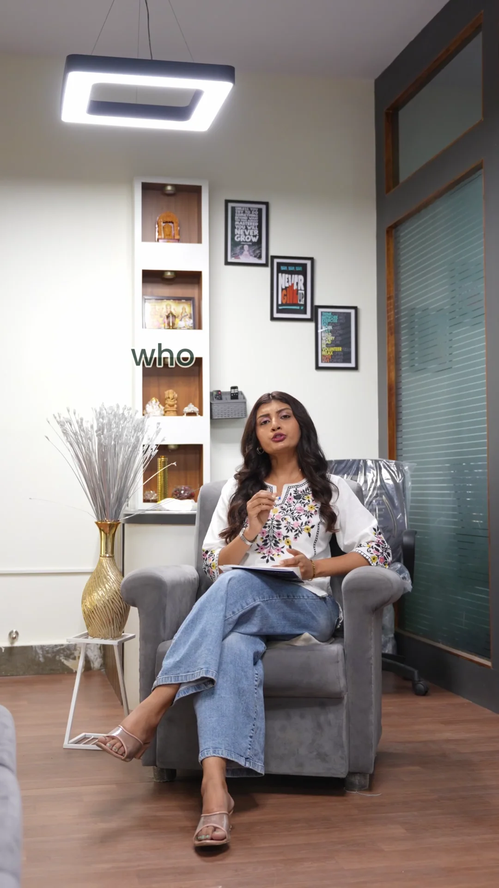
Money Follows
2026Vertical ad edit · 4K source
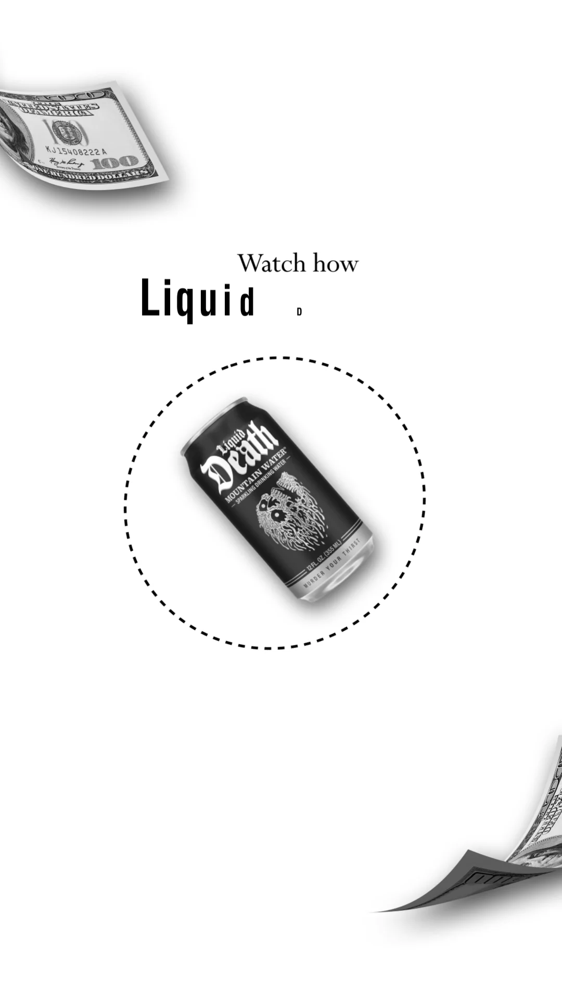
Liquid Death — spec spot
2026Motion graphics · spec ad
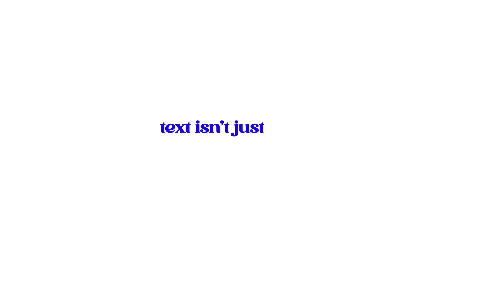
Text Isn’t Just Text
2026Kinetic typography
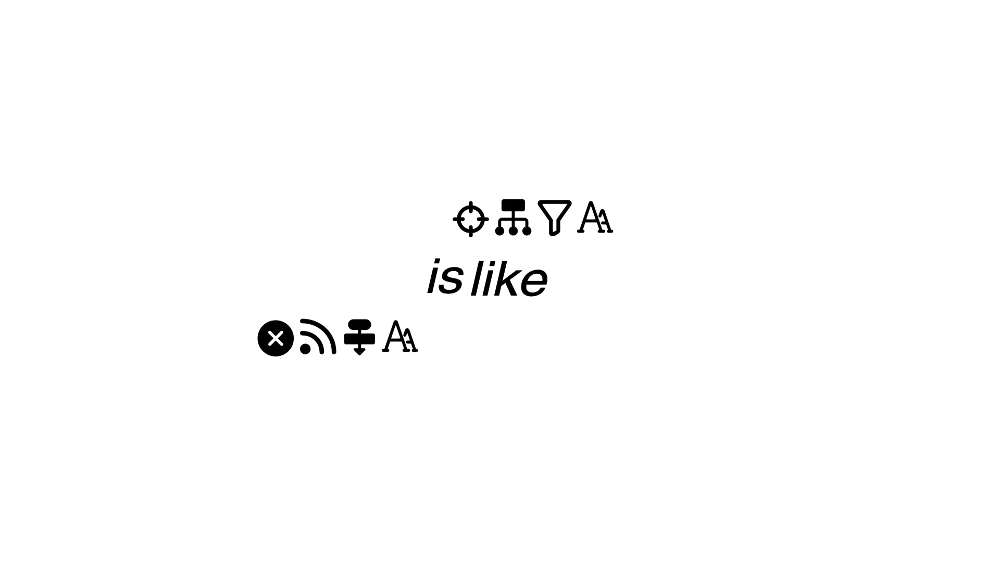
Design Is Like a Game
2026Kinetic typography
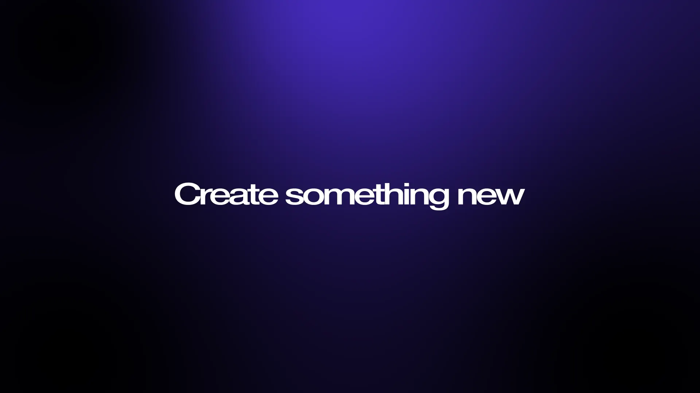
Create Something New
2026Title design
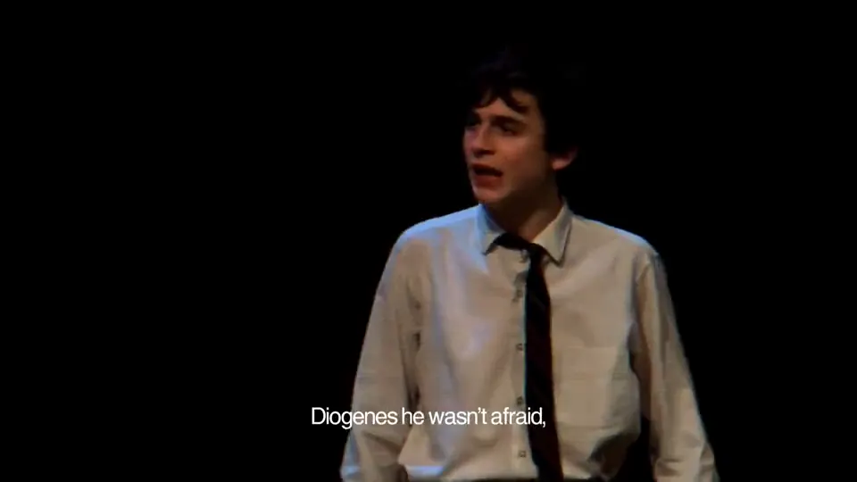
Chalamet — Fan Edit
2026Edit · colour · rhythm
Earlier
Edits, grades & 3D
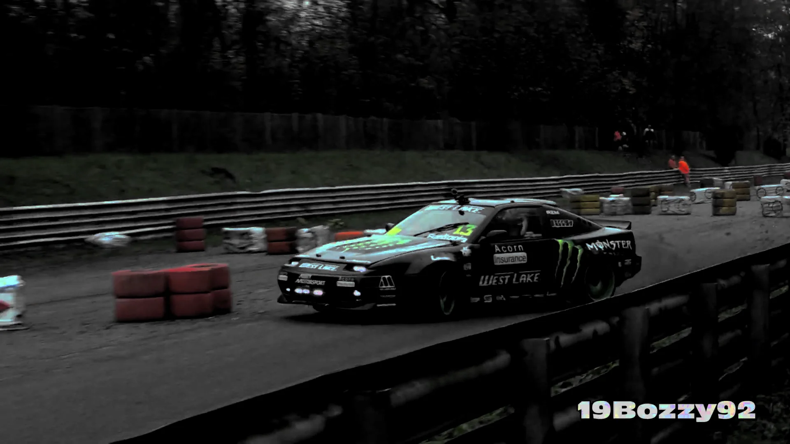
Drift — Colour Grade
GradeColour grading · footage © 19Bozzy92

Blind Justice
3D3D motion graphics
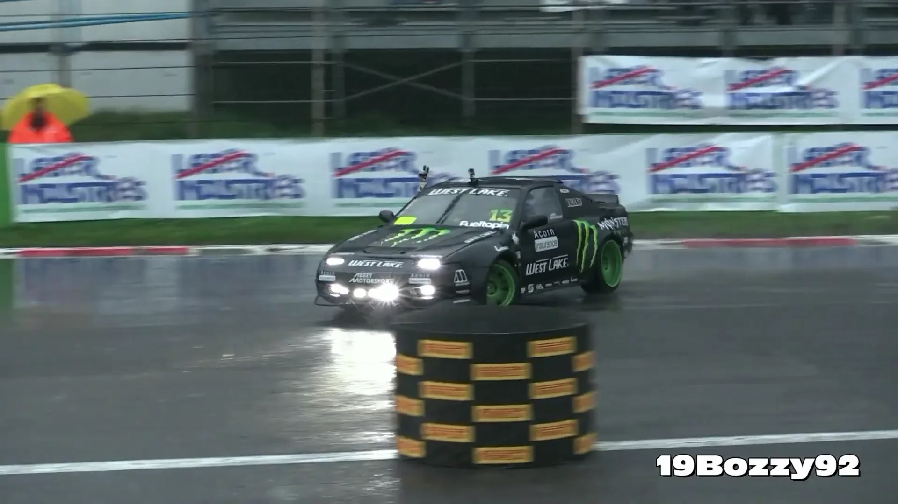
Drift in the Rain — Tracking
TrackMotion tracking · footage © 19Bozzy92
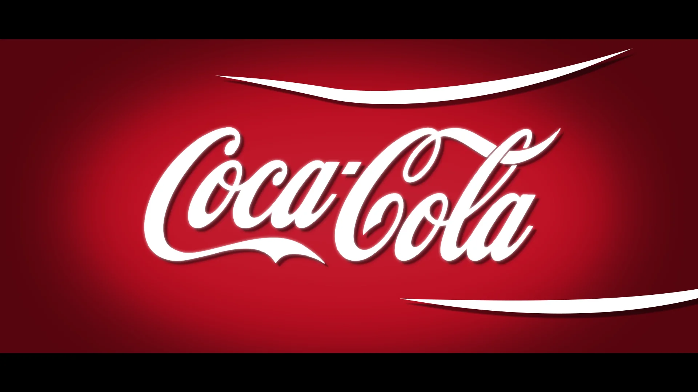
Coca-Cola — How They Sell
DocDocumentary-style explainer · spec
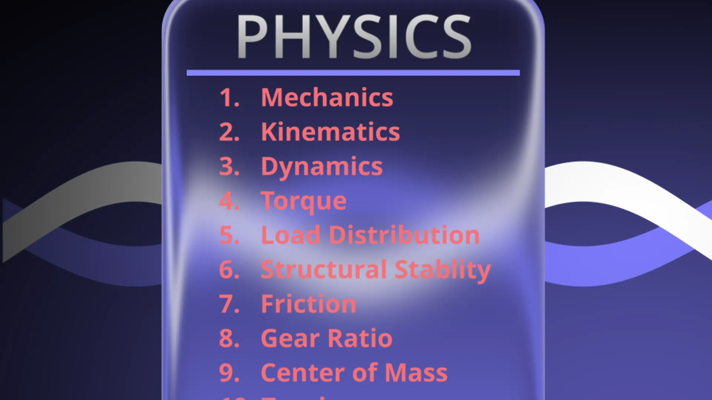
Physics × Robotics
MotionMotion graphics · glass UI
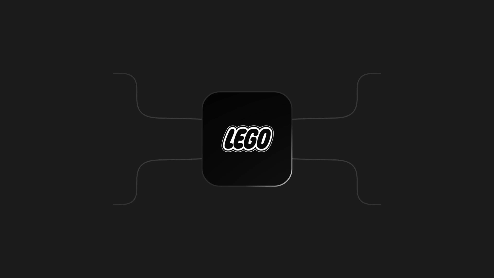
LEGO — Engineering Passion
MotionMotion graphics · spec
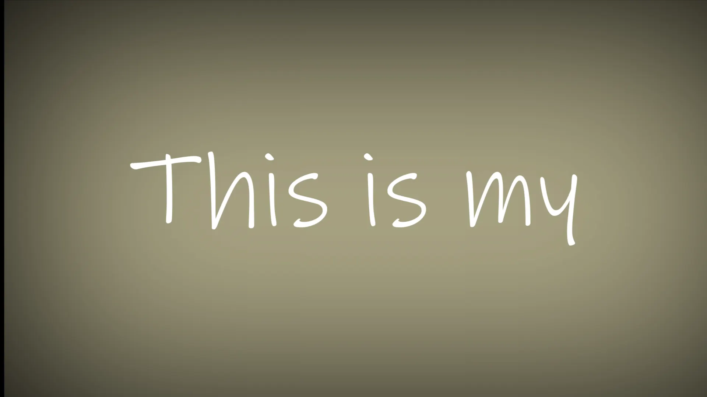
This Is My…
TypeText motion
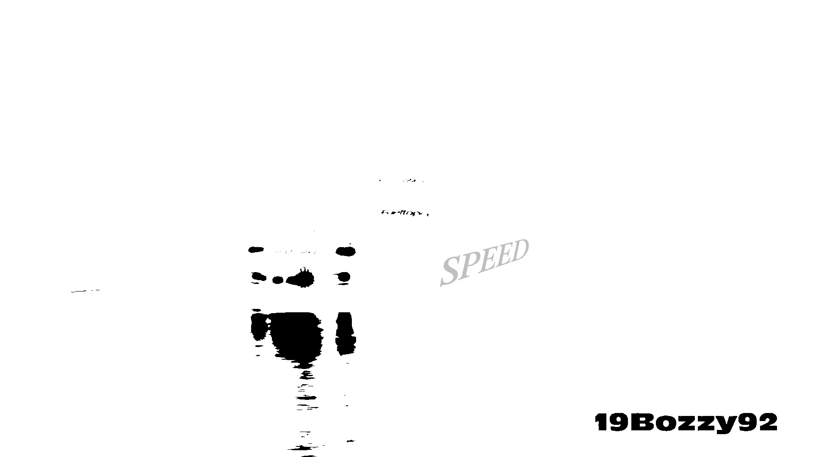
Ink Reveal
RenderAnimated render